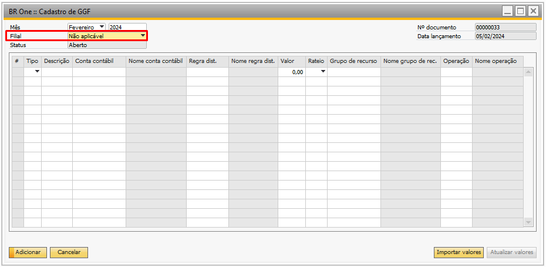
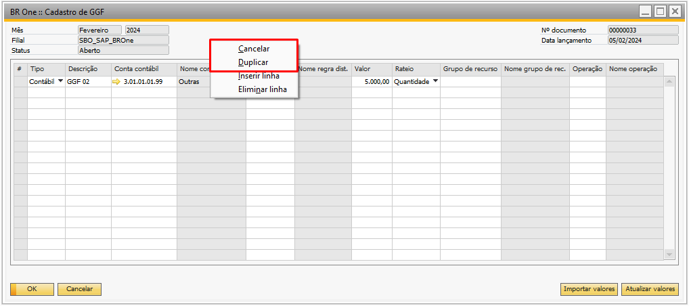

Cadastro de GGF
Para acessar o Cadastro de GGF é necessário ir no menu:
Produção -> Custos -> Cadastro de GGF

Na tela “BR One ::Cadastro de GGF” é possível lançar os gastos gerais de fabricação. O **GGF* são os gastos que não conseguimos inserir diretamente na OP, ou por não ter estes custos ou por ter valores (custos) muito baixos.
Exemplos de GGF: Energia, insumos com custo muito baixo (embalagens, etc.), salários, etc.
No cabeçalho da tela de cadastro do GGF é necessário selecionar o mês e ano ao qual aquele GGF se refere, já o número do documento e a data de lançamento serão preenchidos automaticamente.
O campo “Filial” deverá ser preenchido com a filial ou não aplicável, se o parâmetro “Liberar filial no fechamento de custo” localizado nas configurações de produção, na aba Custo estiver marcado (a partir da versão 322), serão exibidas todas as filiais ativas da base, como ilustrado na imagem abaixo:

Se o parâmetro “Liberar filial no fechamento de custo” estiver desmarcado, no campo “Filial” será exibida uma única opção: “Não aplicável” tanto para base com filiais ativas ou não.
{kind=link}
Na linha da tela será preciso informar o tipo, que define o comportamento para aquele gasto, segue as opções abaixo:

Contábil: Altera o custo dos produtos (faz contabilizações).
Será possível visualizar na tela de fechamento de custo contábil, na aba Resultado, e também na aba LCM e Reavaliações os valores dos lançamentos que serão realizados.
Gerencial: Somente exibição do cálculo (sem contabilização).
Será visualizado somente na tela de fechamento de custo contábil, aqueles custos específicos que não podem ser contabilizados diretamente na OP como um relatório, na aba Resultado.
Não é possível inserir dois cadastros de GGF com o mesmo ano, mês e filial, caso tente a mensagem abaixo será exibida:
{kind=link}
BR One :: Já existe um registro com este ano, mês e filial. [código ‘xxxx’]
Os campos Tipo, Descrição, Conta contábil e Rateio são obrigatórios para adicionar o cadastro do GGF.
Para habilitar as colunas de Regra de distribuição, é necessário habilitá-las na tela de “Dimensões”.

Quando a regra for selecionada, o nome da regra de distribuição aparecerá na coluna Nome regra dist.
Conforme as dimensões ativas, elas serão apresentadas no fechamento de custos e no lançamento contábil manual, logo as dimensões não possuem caráter de filtro para regra do rateio do GGF.

Caso o usuário insira uma linha cuja Conta contábil e as Regras de distribuição sejam iguais, a seguinte mensagem será exibida:
{kind=link}
BR One :: A linha x possui regras repetidas em relação a(s) linha(s) (x).
A coluna “Valor” será preenchida conforme o saldo existente na conta contábil, através do botão Atualizar valores.
Para verificar o valor preenchido pela conta contábil, acesse a tela Razão (Finanças > Relatórios financeiros > Contabilidade > Razão) e filtre pela conta contábil e pelo período definido. O valor a ser carregado no GGF é o Subtotal do período positivo. O valor não poderá ser 0. Caso o valor informado seja 0 e o usuário tente inserir o cadastro, a seguinte mensagem de erro será exibida:

BR One :: Informe um valor maior que zero.
Nas Configurações de produção > Aba Geral caso a opção Manual seja marcada, o botão Atualizar valores ficará bloqueado, possibilitando assim, o preenchimento de duas ou mais linhas com a mesma conta contábil sem a necessidade de preenchimento da Regra de distribuição.

Deve ser escolhida uma forma de rateio para fazer o fechamento: Horas mão-de-obra, Horas máquina, Horas ferramenta e Quantidade. Lembrando que se não houver entrada de PA para a OP, o valor será rateado e separado, mas não será agregado via LCM, para que haja valor a ser agregado a OP precisa ter tido entrada de produto acabado.
Lembrando que se não houver entrada de PA para a OP, o valor será rateado e separado, mas não será agregado via LCM, para haver valor a ser agregado a OP precisa ter tido entrada de produto acabado.

Horas mão de obra: serão consideradas as horas do grupo de recurso do tipo mão de obra da OP.
Horas máquina: serão consideradas as horas do grupo de recurso do tipo máquina da OP.
Horas ferramenta: serão consideradas as horas do grupo de recurso do tipo ferramenta da OP.
Quantidade: será considerada a quantidade de entrada de PA das OPs para realizar o fechamento.
Os campos Grupo de recurso e Operação serão sub-filtros da OP. O rateio Quantidade usará como sub-filtro a Operação e os do tipo Horas usarão como sub-filtros o Grupo de recurso e a Operação. Esses campos não são obrigatórios. Se as colunas Tipo, Conta contábil, Regra dist., Valor e Rateio estiverem preenchidas, será feito o custeio por absorção. Caso seja selecionado um dos dois filtros ou os dois (Grupo de recurso e Operação), será feito o custeio ABC.
Há algumas regras a serem levadas em consideração:
Deve haver apenas um cadastro por mês.
O processamento deve ser feito mês a mês dos meses mais antigos.
Não pode haver alteração de períodos de GGF entre cadastros já processados.
Só pode ser processado período anterior ao atual (é calculado na linha cronológica).
Todos os lançamentos são realizados para o último dia do período.
Botão Importar valores:
Ao clicar no botão, você terá a opção de selecionar um arquivo no formato CSV para atualizar a sétima coluna, que corresponde ao “Valor”. Para garantir uma importação bem-sucedida, é importante que os valores contidos na coluna não contenham pontos (“.”). Caso contrário, ocorrerá um erro e a atualização não será concluída. Todas as outras colunas permanecerão inalteradas durante o processo. A ordem de preenchimento seguirá estritamente a estrutura do arquivo CSV importado.
Exemplo de csv com todas as colunas preenchidas:
{kind=link}
Exemplo de csv com apenas a sétima coluna (valor) preenchida:

Botão Atualizar valores:
É subtraído Débito do Crédito (nesta ordem) da soma de todos os LCMs ocorridos no mês ao qual o GGF se refere;
São realizados os cálculos de cada linha do cadastro e atualizado os valores na coluna ‘Valor’ com o saldo resultante existente na conta.
Caso esteja preenchido as regras de distribuições, serão filtrados os LCMs que possuam estas regras preenchidas.
Caso não haja LCMs no mês/ano selecionado, não serão carregados valores à coluna “Valor”.
Caso não haja LCMs no ano, mês e filial selecionado, não serão carregados valores à coluna “Valor”
Caso esteja habilitado o Fechamento de custo por filial, a validação da conta será apenas para lançamentos contábeis realizados na filial selecionada no cabeçalho.
É possível duplicar ou cancelar um cadastro e GGF clicando com o botão direito em um cadastro já adicionado e selecionado a opção Duplicar ou Cancelar.
{kind=link}